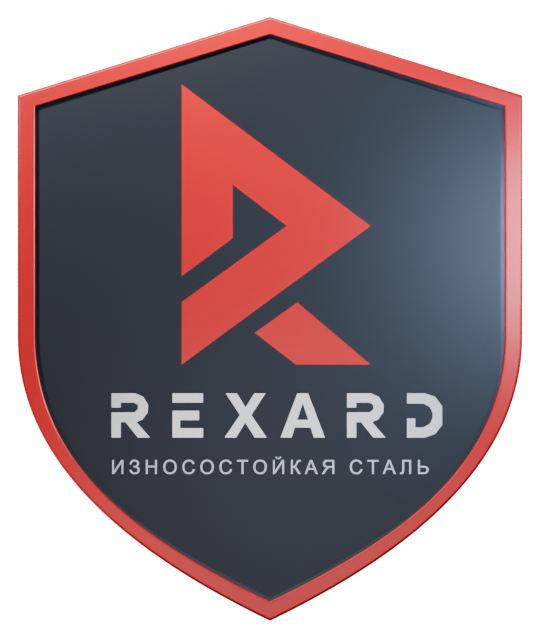
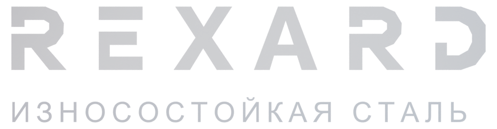
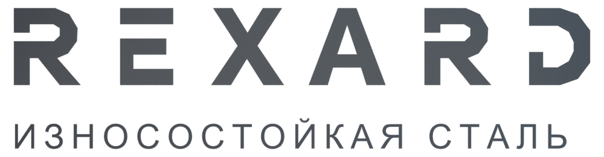

Сопротивление износу
Материал для поверхностей, на которые приходится постоянное трение и контакт с абразивом.



Каждый лист — часть
сильной конструкции.
Всё начинается с листа. Прокрутите страницу, чтобы собрать конструкцию.
Там, где камень, грунт и абразив становятся ежедневной нагрузкой, материал имеет значение.
Горячекатаные износостойкие листы REXARD поставляются после закалки и отпуска — в состоянии Q+T. Их используют для рабочих элементов, футеровки и защиты оборудования от абразивного износа.
Описание материала на сайте ЕМКМатериал для поверхностей, на которые приходится постоянное трение и контакт с абразивом.
Форма, толщина и способ крепления детали работают вместе с правильно подобранной сталью.
Рабочая среда, характер нагрузки и технология изготовления — отправная точка выбора листа.
Стандартные марки — для общетехнических задач.
Исполнения L — для низкотемпературных условий.
Баланс твёрдости и обрабатываемости для общетехнических задач.
| Марка | Толщина, мм | Твёрдость, HB | KV, Дж / °C | Удлинение, % |
|---|---|---|---|---|
| 450 | 4–100 | 420–490 | 24 / −20 | 8 |
| 500 | 4–100 | 460–540 | 21 / −20 | 7 |
| 450L | 6–50 | 420–490 | 27 / −40 | 8 |
| 500L | 6–50 | 460–540 | 27 / −40 | 7 |
Справочные значения по опубликованным таблицам ЕМК. Характеристики конкретной поставки подтверждаются сертификатом партии. Температура в таблице относится к испытанию KV.
От ковша экскаватора до перегрузочного узла.
Сталь там, где она нужна больше всего.
Ковши экскаваторов, кузова карьерных самосвалов, бункеры и лотки контактируют с породой на каждом рабочем цикле. Износостойкие детали защищают рабочие поверхности.
Грунт, песок и щебень создают абразивную нагрузку. Подбор стали учитывает и износ, и удары, и геометрию рабочего органа.
Непрерывный поток сыпучих материалов требует защиты рабочих поверхностей. Лист используют для сменных элементов в зонах интенсивного трения.
Лазерная, плазменная, газовая и гидроабразивная. Способ выбирают с учётом толщины и требований к кромке.
Холодная формовка на прессах и вальцах. Радиусы и усилия согласуют с выбранной маркой и толщиной.
MMA, MIG/MAG, FCAW и SAW. Режимы и необходимость подогрева определяют по рекомендациям для материала.
Европейская металлургическая компания — официальный дилер REXARD. Поставка с сертификатами качества, согласование раскроя и техническая консультация.